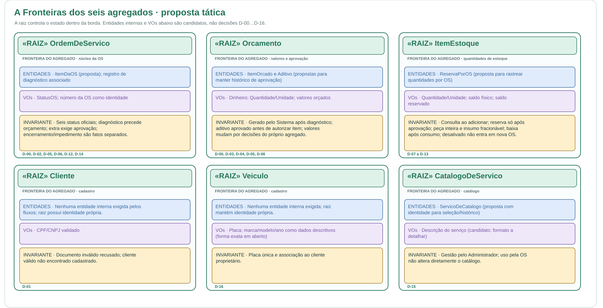
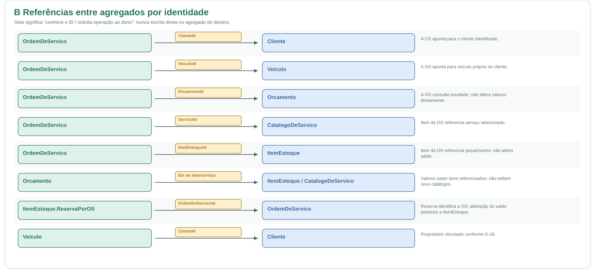
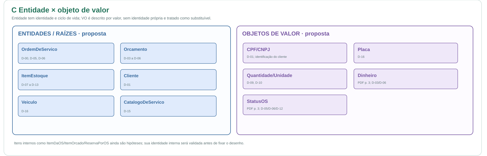
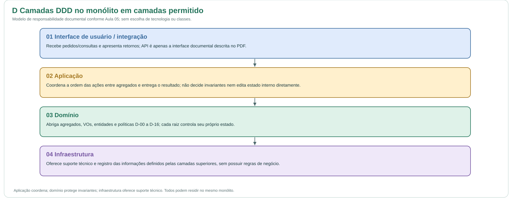

Use os diagramas abaixo para acompanhar o fluxo. Baixar arquivo Excalidraw editável
Fluxo principal




Agregados, referências, entidades, objetos de valor e camadas da aplicação.
Use os diagramas abaixo para acompanhar o fluxo. Baixar arquivo Excalidraw editável



